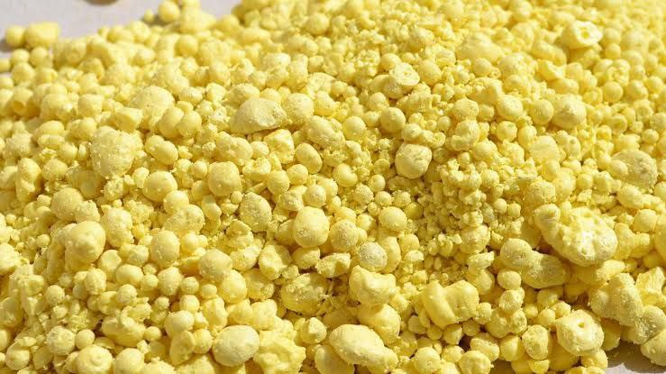

Granular Sulfur Overview
Granular Sulfur is a high-value industrial and agricultural commodity used in fertilizer production, soil conditioning, sulfuric acid manufacturing, and various chemical processes. It is typically supplied as free-flowing yellow granules, which makes it easier to handle, store, transport, and apply than powdered sulfur.
What It Is
Granular sulfur is elemental sulfur that has been processed into uniform granules, commonly in the 2 to 6 mm range, with high purity grades often available at 99.5% or 99.8%. This physical form reduces dust generation and improves flowability, which is important for bulk logistics and industrial blending. In agriculture, elemental sulfur is a secondary macronutrient, but plants cannot use it directly. It must first be converted by soil microorganisms into sulfate sulfur, which is the plant-available form. That is why granular sulfur is often used both as a nutrient source and as a soil amendment in specific cropping systems.
Main Benefits
One major benefit of granular sulfur is its ability to lower soil pH over time, especially in alkaline or high-pH soils. This can improve nutrient availability and create better growing conditions for crops such as blueberries and other acid-loving plants. It is also valuable because of its high purity and stable form. Compared with lump or dust sulfur, granular sulfur is cleaner to handle, easier to spread, and better suited to large-scale agricultural and industrial supply chains.
Typical Applications
Granular sulfur is widely used in fertilizer production and soil amendment programs, where it helps correct sulfur deficiency and improve soil conditions. It is also used in the production of sulfuric acid, one of the most important industrial chemicals globally, and in other chemical raw material applications. In agriculture, it can also support pest and disease management in certain systems, while contributing to plant nutrition and soil health. Because application rates depend on soil type and crop needs, correct use should always be based on soil testing and local agronomic guidance.
Why Choose It
Granular Sulfur is a practical choice for buyers who need a reliable, high-purity sulfur product with strong handling characteristics and broad downstream use. Its combination of performance, storage stability, and industrial versatility makes it a strong commodity for both agricultural and chemical markets. While our core expertise is bitumen, we also source and supply related commodities like granular sulfur for verified buyers.
